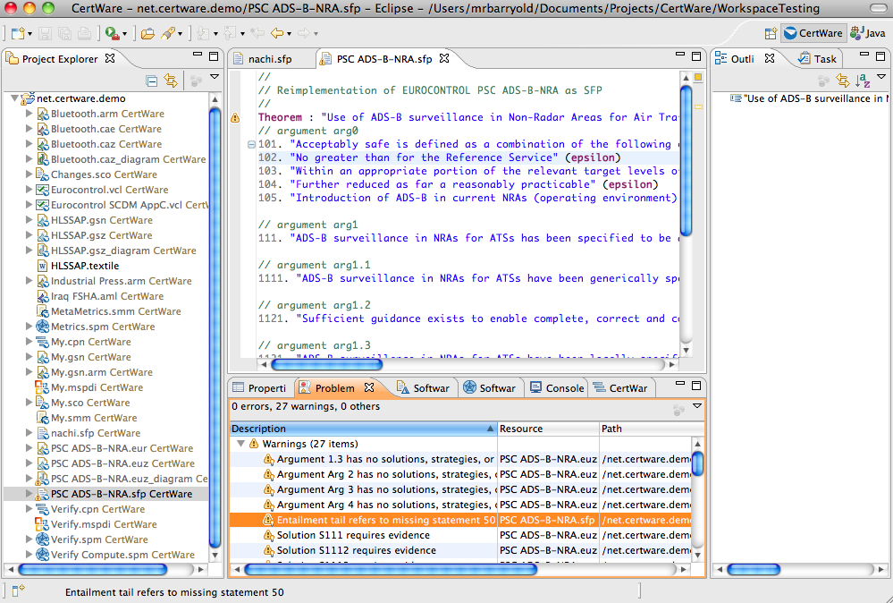
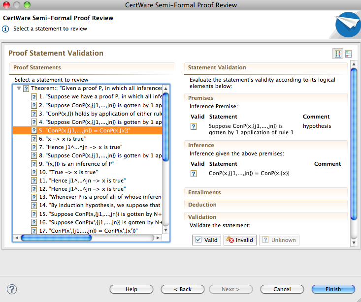

References
- Documents
- Nachiappan, "Tools for Semi-Formal Proofs", Master's Thesis, Texas Tech University, Lubbock, TX, 2008.
- Nachiappan, Blount, and Rushton, "A System for Checking Semi-Formal Proofs", in the Proceedings of FECS'08: The 2008 International Conference on Frontiers in Education: Computer Science and Computer Engineering, Las Vegas, NV, 2008.
Semi-Formal Proof Arguments
A semi-formal proof is a proof structure in which the overall arrangement of a proof is a formal data structure, while individual propositions within the structure are expressed either formally or informally. The motivation is to make the proof easier to review by human readers, while preserving some automated verification capabilities. The language is designed in such a way that the human review is as simple as possible, showing only the related premises and inferences necessary to support a deduction statement requiring validation. This approach minimizes the clutter and confusion of validating the proof.
Although SFP models have not traditionally been employed in safety case applications, we feel this novel approach offers some compelling benefits. We will be developing some templates for using SFP models in a way that would be familiar to a safety case author or reviewer, and will offer these through the CertWare workbench.
The CertWare implementation of SFP is through a domain-specific language (DSL). The SFP DSL provides an editor with syntax checking and built-in validation rules. Just create a file with the extension *.sfp or use the New File wizard to create an SFP file. To enter a proof (a form of safety case), start by entering a theorm statement which is the top-level claim of the case. Then, on each subsequent line, enter a line number for idenfication followed by an hypothesis, entailment, or simple statement. A statement must provide a justification using a parenthetical list of statement numbers following the statement; these are then the justifications upon which the statement depends. After entering the proof, run the Review Wizard to launch a wizard that walks the analyst through the proof step-by-step, prompting him to validate the inference made in each step. The analyst can mark the statement as valid, invalid, or unknown, and these states will propagate through the rest of the proof. When all of the statements are valid according to the analyst, we can say the proof is valid.
The following automated verification rules are built-into the SFP DSL editor. When found to be invalid, the rules generate markers on the proof file resource and in the editor.
- Each justification must be non-empty.
- A proof must have at least one proof step.
- A proof cannot contain cycles.
- A statement justification cannot refer to itself.
- A justification identifier must exist.
- An entailment tail identifier must exist.
- Each entailment head identifier must exist.
- An entailment statement cannot include itself in the head or tail.
The text-based editor is shown in the first figure.

The review wizard is shown in the next figure.

Examples
The following example models can be downloaded then imported into the workbench.
See the evaluation license for legal terms regarding this software.